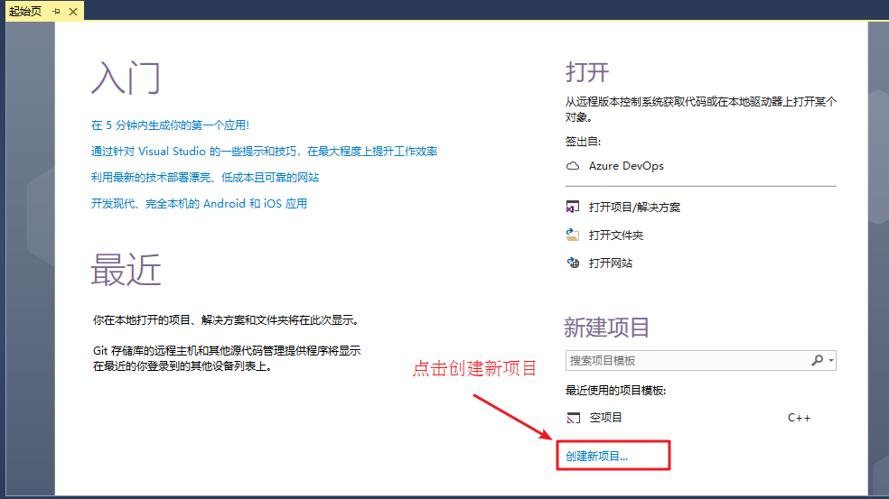
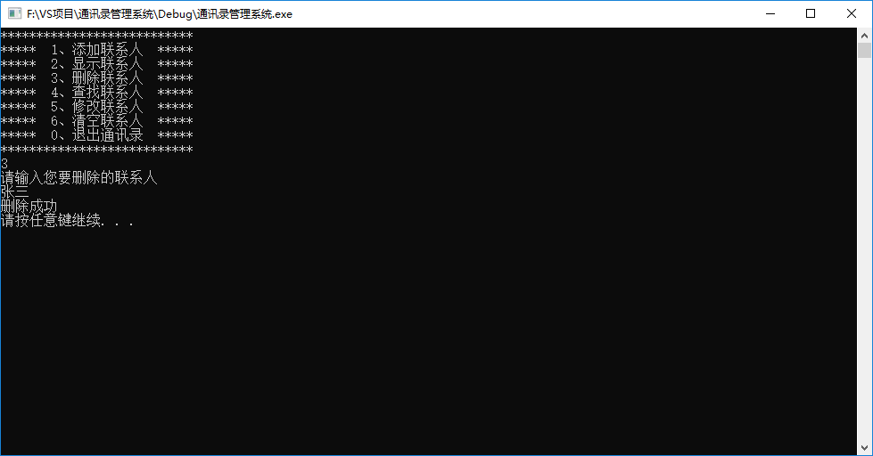
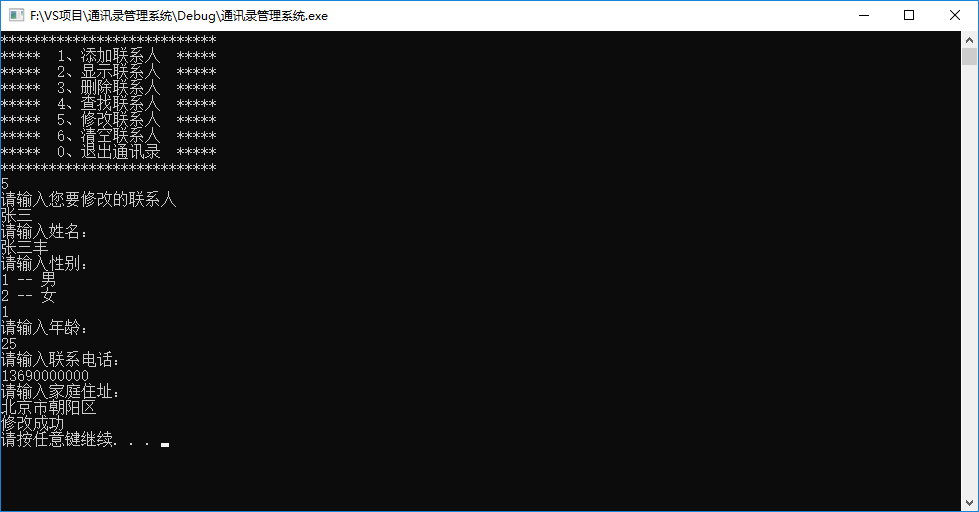
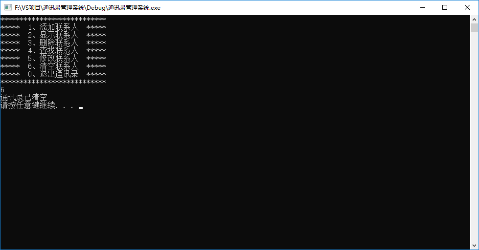

<!DOCTYPE html>
<html lang="zh-CN">
<head><meta name="generator" content="Hexo 3.9.0">
  <meta charset="utf-8">
  <meta content="width=device-width, initial-scale=1.0, maximum-scale=1.0, user-scalable=0" name="viewport">
  
  <title itemprop="name">通讯录管理系统 | APingStudio</title>
  
    <link rel="shortcut icon" href="/images/img1.png">
  
  <meta http-equiv="x-dns-prefetch-control" content="on">
  <link rel="stylesheet" href="https://fonts.googleapis.com/css?family=Noto+SerifMerriweather|Merriweather+Sans|Source+Code+Pro|Ubuntu:400,700|Noto+Serif+SC" media="all">
  <link rel="dns-prefetch" href="//cdn.jsdelivr.net">
  <link rel="stylesheet" id="saukra_css-css" href="/css/style.css" type="text/css" media="all">
  <link rel="stylesheet" href="/css/lib.min.css" media="all">
  <link rel="stylesheet" href="/css/font.css" media="all">
  <link rel="stylesheet" href="/css/insight.css" media="all">
  <link rel="stylesheet" href="/css/jquery.fancybox.min.css" media="all">
  <link rel="stylesheet" href="/css/zoom.css" media="all">
  <link rel="stylesheet" type="text/css" href="/css/sharejs.css">
<!--   <link rel="stylesheet" id="saukra_css-css" href="https://2heng.xin/wp-content/cache/autoptimize/css/autoptimize_ad42a61f4c7d4bdd9f91afcff6b5dda5.css
" type="text/css" media="all"> -->
  <script>
  /*Initial Variables*/
  var mashiro_option = new Object();
  var mashiro_global = new Object();
  mashiro_option.NProgressON = true;
  /* 
   * 邮箱信息之类的东西可以填在这里，这些js变量基本都作用于sakura-app.js
   * 这样的设置仅是为了方便在基于PHP开发的主题中设置js变量，既然移植到了Node上，我想或许可以精简这一逻辑吧
   */
  mashiro_option.email_domain = "";
  mashiro_option.email_name = "";
  mashiro_option.cookie_version_control = "";
  mashiro_option.qzone_autocomplete = false;
  mashiro_option.site_name = "一咻工作室APingStudio";
  mashiro_option.author_name = "APingStudio";
  mashiro_option.site_url = "https://space.bilibili.com/331466888";
  mashiro_option.v_appId = "DdsMXpMXVU9txs2JImBoeySP-gzGzoHsz";
  mashiro_option.v_appKey = "Lwl1hTpDKgcYhvil6DWs7zoY";
  mashiro_option.mathjax = "1";
  mashiro_option.qq_api_url = "https://api.mashiro.top/qqinfo/"; 
  mashiro_option.qq_avatar_api_url = "https://api.mashiro.top/qqinfo/";

  // mashiro_option.jsdelivr_css_src = "https://cdn.jsdelivr.net/gh/moezx/cdn@3.4.5/css/lib.min.css";
  // mashiro_option.float_player_on = true;

  /*End of Initial Variables*/
  </script>
  <script type="text/javascript">
  var bg = "https://i.loli.net/2021/02/11/dFGIORg7k5VX9ha.jpg,https://i.loli.net/2021/02/11/x7ietRWXqHjLDy5.jpg,https://i.loli.net/2021/02/11/FgY4QpaLNSuvKce.jpg,https://i.loli.net/2021/02/11/32ZJYQhuV19sfgF.jpg,https://i.loli.net/2021/02/11/t2uDVHCXspacGgd.jpg".split(",");
  var bgindex = Math.floor(Math.random()*bg.length);
  if (!!window.ActiveXObject || "ActiveXObject" in window) { //is IE?
    alert('朋友，IE浏览器未适配哦~');
  }
  </script>
  <style type="text/css">
  .hljs-ln{border-collapse:collapse}.hljs-ln td{padding:0}.hljs-ln-n:before{content:attr(data-line-number)}
  </style>
  <style type="text/css">.site-top .lower nav{display:block !important;}.author-profile i,.post-like a,.post-share .show-share,.sub-text,.we-info a,span.sitename,.post-more i:hover,#pagination a:hover,.post-content a:hover,.float-content i:hover{color:#FE9600}.feature i,.download,.navigator i:hover,.links ul li:before,.ar-time i,span.ar-circle,.object,.comment .comment-reply-link,.siren-checkbox-radio:checked + .siren-checkbox-radioInput:after{background:#FE9600}::-webkit-scrollbar-thumb{background:#FE9600}.download,.navigator i:hover,.link-title,.links ul li:hover,#pagination a:hover,.comment-respond input[type='submit']:hover{border-color:#FE9600}.entry-content a:hover,.site-info a:hover,.comment h4 a,#comments-navi a.prev,#comments-navi a.next,.comment h4 a:hover,.site-top ul li a:hover,.entry-title a:hover,#archives-temp h3,span.page-numbers.current,.sorry li a:hover,.site-title a:hover,i.iconfont.js-toggle-search.iconsearch:hover,.comment-respond input[type='submit']:hover{color:#FE9600}.comments .comments-main{display:block !important;}.comments .comments-hidden{display:none !important;}background-position:center center;background-attachment:inherit;}
  </style>
</head>
</html>
<body class="page-template page-template-user page-template-page-analytics page-template-userpage-analytics-php page page-id-1297 chinese-font serif isWebKit">
  <div class="scrollbar" id="bar">
  </div>
  <a href="#" class="cd-top faa-float animated"></a>
  <section id="main-container">
    <div class="headertop filter-grid">
  <div id="banner_wave_1"></div>
  <div id="banner_wave_2"></div>
  <figure id="centerbg" class="centerbg">
    <div class="focusinfo no-select">
      <div class="header-tou">
        <a href="https://space.bilibili.com/331466888">
          
        </a>
      </div>
      <div class="header-info">
        <p>Live your life with passion! With some drive!</p>
        <div class="top-social_v2">
          <li id="bg-pre">
            
          </li>
          
            
              
                <li>
                  <a href="https://github.com/nerdsman" target="_blank" class="social-github" title="github">
                    
                  </a>
                </li>
              
            
              
                <li>
                  <a href="https://www.zhihu.com/people/lu-tao-85-50" target="_blank" class="social-github" title="zhihu">
                    
                  </a>
                </li>
              
            
              
                <li class="wechat">
                  <a href="/#">
                    
                  </a>
                  <div class="wechatInner">
                    
                  </div>
                </li>
              
            
          
          <li id="bg-next">
            
          </li>
        </div>
      </div>
    </div>
  </figure>
  <div id="video-container" style="">
    <video style="object-fit: fill" id="bgvideo" class="video" video-name="" src="" width="auto" preload="auto">
    </video>
    <div id="video-btn" class="loadvideo videolive">
    </div>
    <div id="video-add">
    </div>
    <div class="video-stu">
    </div>
  </div>
  <div class="headertop-down faa-float animated" onclick="headertop_down()">
    <span>
      <i class="fa fa-chevron-down" aria-hidden="true">
      </i>
    </span>
  </div>
</div>
    <div id="page" class="site wrapper">
      <header class="site-header no-select gizle sabit" role="banner">
  <div class="site-top">
    <div class="site-branding">
      <span class="site-title">
        <span class="logolink moe-mashiro">
          <a href="/">
            <span class="sakurasono">一咻工作室</span>
            <span class="shironeko">APingStudio</span>
          </a>
        </span>
      </span>
    </div>
    <div class="searchbox search-form-submit">
      <i class="iconfont js-toggle-search iconsearch icon-search">
      </i>
    </div>
    <div id="show-nav" class="showNav mobile-fit">
      <div class="line line1">
      </div>
      <div class="line line2">
      </div>
      <div class="line line3">
      </div>
    </div>
    <div class="lower-cantiner">
      <div class="lower">
        <nav class="mobile-fit-control hide">
          <ul id="menu-new" class="menu">
            
              <li>
                <a href="/">
                  <span class="faa-parent animated-hover">
                    <i class="fa  fa-fort-awesome faa-shake" aria-hidden="true"></i>
                    首页
                  </span>
                </a>
                
              </li>
            
              <li>
                <a href="/archives">
                  <span class="faa-parent animated-hover">
                    <i class="fa  fa-archive faa-shake" aria-hidden="true"></i>
                    归档
                  </span>
                </a>
                
                  <ul class="sub-menu">
                    
                      <li>
                        <a href="/categories/技术/">
                          <i class="fa fa-code" aria-hidden="true"></i>
                          技术
                        </a>
                      </li>
                    
                      <li>
                        <a href="/categories/生活/">
                          <i class="fa fa-file-text-o" aria-hidden="true"></i>
                          生活
                        </a>
                      </li>
                    
                      <li>
                        <a href="/materials/">
                          <i class="fa fa-cloud-download" aria-hidden="true"></i>
                          资源
                        </a>
                      </li>
                    
                      <li>
                        <a href="/categories/随想/">
                          <i class="fa fa-commenting-o" aria-hidden="true"></i>
                          随想
                        </a>
                      </li>
                    
                      <li>
                        <a href="/categories/转载/">
                          <i class="fa fa-book" aria-hidden="true"></i>
                          转载
                        </a>
                      </li>
                    
                  </ul>
                
              </li>
            
              <li>
                <a href="javascript:;">
                  <span class="faa-parent animated-hover">
                    <i class="fa  fa-list-ul faa-vertical" aria-hidden="true"></i>
                    清单
                  </span>
                </a>
                
                  <ul class="sub-menu">
                    
                      <li>
                        <a href="/tags/悦读/">
                          <i class="fa fa-th-list faa-bounce" aria-hidden="true"></i>
                          书单
                        </a>
                      </li>
                    
                      <li>
                        <a href="/bangumi/">
                          <i class="fa fa-film faa-vertical" aria-hidden="true"></i>
                          番组
                        </a>
                      </li>
                    
                      <li>
                        <a href="/music/">
                          <i class="fa fa-headphones" aria-hidden="true"></i>
                          歌单
                        </a>
                      </li>
                    
                      <li>
                        <a href="/tags/图集/">
                          <i class="fa fa-photo" aria-hidden="true"></i>
                          图集
                        </a>
                      </li>
                    
                  </ul>
                
              </li>
            
              <li>
                <a href="/comment/">
                  <span class="faa-parent animated-hover">
                    <i class="fa  fa-pencil-square-o faa-tada" aria-hidden="true"></i>
                    留言板
                  </span>
                </a>
                
              </li>
            
              <li>
                <a href="/links/">
                  <span class="faa-parent animated-hover">
                    <i class="fa  fa-link faa-shake" aria-hidden="true"></i>
                    友人帐
                  </span>
                </a>
                
              </li>
            
              <li>
                <a href="/donate/">
                  <span class="faa-parent animated-hover">
                    <i class="fa  fa-heart faa-pulse" aria-hidden="true"></i>
                    赞赏
                  </span>
                </a>
                
              </li>
            
              <li>
                <a href="/">
                  <span class="faa-parent animated-hover">
                    <i class="fa  fa-leaf faa-wrench" aria-hidden="true"></i>
                    关于
                  </span>
                </a>
                
                  <ul class="sub-menu">
                    
                      <li>
                        <a href="/about/">
                          <i class="fa fa-meetup" aria-hidden="true"></i>
                          我？
                        </a>
                      </li>
                    
                      <li>
                        <a href="/theme-sakura/">
                          <i class="fa iconfont icon-sakura" aria-hidden="true"></i>
                          主题
                        </a>
                      </li>
                    
                      <li>
                        <a href="/lab/">
                          <i class="fa fa-cogs" aria-hidden="true"></i>
                          Lab
                        </a>
                      </li>
                    
                  </ul>
                
              </li>
            
          </ul>
        </nav>
      </div>
    </div>
  </div>
</header>

      <link rel="stylesheet" type="text/css" href="/css/sharejs.css">
<link rel="stylesheet" href="https://cdnjs.cloudflare.com/ajax/libs/tocbot/4.4.2/tocbot.css">
<div class="pattern-center-blank"></div>

<div id="content" class="site-content">
  <div id="primary" class="content-area">
    <main id="main" class="site-main" role="main">
      <article id="post-1" class="post-1 post type-post status-publish format-standard has-post-thumbnail hentry category-uncategorized">
        <div class="toc"></div>
        <!--<div class="toc-entry-content"><!-- 套嵌目录使用（主要为了支援评论）-->
        
          <header class="entry-header">
            <h1 class="entry-title">通讯录管理系统</h1>
            <p class="entry-census">&nbsp;·&nbsp;2021-2-3&nbsp;·&nbsp;<span id="busuanzi_value_page_pv"></span>次阅读</p></p>

            <hr>
          </header>
        
        <div class="entry-content">
          <h1 id="通讯录管理系统"><a href="#通讯录管理系统" class="headerlink" title="通讯录管理系统"></a>通讯录管理系统</h1><h2 id="1、系统需求"><a href="#1、系统需求" class="headerlink" title="1、系统需求"></a>1、系统需求</h2><p>通讯录是一个可以记录亲人、好友信息的工具。</p>
<p>本教程主要利用C++来实现一个通讯录管理系统</p>
<p>系统中需要实现的功能如下：</p>
<ul>
<li>添加联系人：向通讯录中添加新人，信息包括（姓名、性别、年龄、联系电话、家庭住址）最多记录1000人</li>
<li>显示联系人：显示通讯录中所有联系人信息</li>
<li>删除联系人：按照姓名进行删除指定联系人</li>
<li>查找联系人：按照姓名查看指定联系人信息</li>
<li>修改联系人：按照姓名重新修改指定联系人</li>
<li>清空联系人：清空通讯录中所有信息</li>
<li>退出通讯录：退出当前使用的通讯录</li>
</ul>
<h2 id="2、创建项目"><a href="#2、创建项目" class="headerlink" title="2、创建项目"></a>2、创建项目</h2><p>创建项目步骤如下：</p>
<ul>
<li>创建新项目</li>
<li>添加文件</li>
</ul>
<h3 id="2-1-创建项目"><a href="#2-1-创建项目" class="headerlink" title="2.1 创建项目"></a>2.1 创建项目</h3><p>打开vs2017后，点击创建新项目，创建新的C++项目</p>
<p></p>
<p>填写项目名称，选择项目路径</p>
<p></p>
<h3 id="2-2添加文件"><a href="#2-2添加文件" class="headerlink" title="2.2添加文件"></a>2.2添加文件</h3><p></p>
<p></p>
<p>添加成功后，效果如图：</p>
<p></p>
<p>至此，项目已创建完毕</p>
<h2 id="3、菜单功能"><a href="#3、菜单功能" class="headerlink" title="3、菜单功能"></a>3、菜单功能</h2><p><strong>功能描述：</strong> 用户选择功能的界面</p>
<p>菜单界面效果如下图：</p>
<p></p>
<p><strong>步骤：</strong></p>
<ul>
<li>封装函数显示该界面  如 <code>void showMenu()</code></li>
<li>在main函数中调用封装好的函数</li>
</ul>
<p><strong>代码：</strong></p>
<figure class="highlight c++"><table><tr><td class="gutter"><pre><span class="line">1</span><br><span class="line">2</span><br><span class="line">3</span><br><span class="line">4</span><br><span class="line">5</span><br><span class="line">6</span><br><span class="line">7</span><br><span class="line">8</span><br><span class="line">9</span><br><span class="line">10</span><br><span class="line">11</span><br><span class="line">12</span><br><span class="line">13</span><br><span class="line">14</span><br><span class="line">15</span><br><span class="line">16</span><br><span class="line">17</span><br><span class="line">18</span><br><span class="line">19</span><br><span class="line">20</span><br><span class="line">21</span><br><span class="line">22</span><br><span class="line">23</span><br><span class="line">24</span><br><span class="line">25</span><br></pre></td><td class="code"><pre><span class="line"><span class="meta">#<span class="meta-keyword">include</span><span class="meta-string">&lt;iostream&gt;</span></span></span><br><span class="line"><span class="keyword">using</span> <span class="keyword">namespace</span> <span class="built_in">std</span>;</span><br><span class="line"></span><br><span class="line"><span class="comment">//菜单界面</span></span><br><span class="line"><span class="function"><span class="keyword">void</span> <span class="title">showMenu</span><span class="params">()</span></span></span><br><span class="line"><span class="function"></span>&#123;</span><br><span class="line">	<span class="built_in">cout</span> &lt;&lt; <span class="string">"***************************"</span> &lt;&lt; <span class="built_in">endl</span>;</span><br><span class="line">	<span class="built_in">cout</span> &lt;&lt; <span class="string">"*****  1、添加联系人  *****"</span> &lt;&lt; <span class="built_in">endl</span>;</span><br><span class="line">	<span class="built_in">cout</span> &lt;&lt; <span class="string">"*****  2、显示联系人  *****"</span> &lt;&lt; <span class="built_in">endl</span>;</span><br><span class="line">	<span class="built_in">cout</span> &lt;&lt; <span class="string">"*****  3、删除联系人  *****"</span> &lt;&lt; <span class="built_in">endl</span>;</span><br><span class="line">	<span class="built_in">cout</span> &lt;&lt; <span class="string">"*****  4、查找联系人  *****"</span> &lt;&lt; <span class="built_in">endl</span>;</span><br><span class="line">	<span class="built_in">cout</span> &lt;&lt; <span class="string">"*****  5、修改联系人  *****"</span> &lt;&lt; <span class="built_in">endl</span>;</span><br><span class="line">	<span class="built_in">cout</span> &lt;&lt; <span class="string">"*****  6、清空联系人  *****"</span> &lt;&lt; <span class="built_in">endl</span>;</span><br><span class="line">	<span class="built_in">cout</span> &lt;&lt; <span class="string">"*****  0、退出通讯录  *****"</span> &lt;&lt; <span class="built_in">endl</span>;</span><br><span class="line">	<span class="built_in">cout</span> &lt;&lt; <span class="string">"***************************"</span> &lt;&lt; <span class="built_in">endl</span>;</span><br><span class="line">&#125;</span><br><span class="line"></span><br><span class="line"><span class="function"><span class="keyword">int</span> <span class="title">main</span><span class="params">()</span> </span>&#123;</span><br><span class="line"></span><br><span class="line">	showMenu();</span><br><span class="line"></span><br><span class="line">	system(<span class="string">"pause"</span>);</span><br><span class="line"></span><br><span class="line">	<span class="keyword">return</span> <span class="number">0</span>;</span><br><span class="line">&#125;</span><br></pre></td></tr></table></figure>
<h2 id="4、退出功能"><a href="#4、退出功能" class="headerlink" title="4、退出功能"></a>4、退出功能</h2><p>功能描述：退出通讯录系统</p>
<p>思路：根据用户不同的选择，进入不同的功能，可以选择switch分支结构，将整个架构进行搭建</p>
<p>当用户选择0时候，执行退出，选择其他先不做操作，也不会退出程序</p>
<p><strong>代码：</strong></p>
<figure class="highlight c++"><table><tr><td class="gutter"><pre><span class="line">1</span><br><span class="line">2</span><br><span class="line">3</span><br><span class="line">4</span><br><span class="line">5</span><br><span class="line">6</span><br><span class="line">7</span><br><span class="line">8</span><br><span class="line">9</span><br><span class="line">10</span><br><span class="line">11</span><br><span class="line">12</span><br><span class="line">13</span><br><span class="line">14</span><br><span class="line">15</span><br><span class="line">16</span><br><span class="line">17</span><br><span class="line">18</span><br><span class="line">19</span><br><span class="line">20</span><br><span class="line">21</span><br><span class="line">22</span><br><span class="line">23</span><br><span class="line">24</span><br><span class="line">25</span><br><span class="line">26</span><br><span class="line">27</span><br><span class="line">28</span><br><span class="line">29</span><br><span class="line">30</span><br><span class="line">31</span><br><span class="line">32</span><br><span class="line">33</span><br><span class="line">34</span><br><span class="line">35</span><br><span class="line">36</span><br><span class="line">37</span><br><span class="line">38</span><br></pre></td><td class="code"><pre><span class="line"><span class="function"><span class="keyword">int</span> <span class="title">main</span><span class="params">()</span> </span>&#123;</span><br><span class="line"></span><br><span class="line">	<span class="keyword">int</span> select = <span class="number">0</span>;</span><br><span class="line"></span><br><span class="line">	<span class="keyword">while</span> (<span class="literal">true</span>)</span><br><span class="line">	&#123;</span><br><span class="line">		showMenu();</span><br><span class="line"></span><br><span class="line">		<span class="built_in">cin</span> &gt;&gt; select;</span><br><span class="line">		</span><br><span class="line">		<span class="keyword">switch</span> (select)</span><br><span class="line">		&#123;</span><br><span class="line">		<span class="keyword">case</span> <span class="number">1</span>:  <span class="comment">//添加联系人</span></span><br><span class="line">			<span class="keyword">break</span>;</span><br><span class="line">		<span class="keyword">case</span> <span class="number">2</span>:  <span class="comment">//显示联系人</span></span><br><span class="line">			<span class="keyword">break</span>;</span><br><span class="line">		<span class="keyword">case</span> <span class="number">3</span>:  <span class="comment">//删除联系人</span></span><br><span class="line">			<span class="keyword">break</span>;</span><br><span class="line">		<span class="keyword">case</span> <span class="number">4</span>:  <span class="comment">//查找联系人</span></span><br><span class="line">			<span class="keyword">break</span>;</span><br><span class="line">		<span class="keyword">case</span> <span class="number">5</span>:  <span class="comment">//修改联系人</span></span><br><span class="line">			<span class="keyword">break</span>;</span><br><span class="line">		<span class="keyword">case</span> <span class="number">6</span>:  <span class="comment">//清空联系人</span></span><br><span class="line">			<span class="keyword">break</span>;</span><br><span class="line">		<span class="keyword">case</span> <span class="number">0</span>:  <span class="comment">//退出通讯录</span></span><br><span class="line">			<span class="built_in">cout</span> &lt;&lt; <span class="string">"欢迎下次使用"</span> &lt;&lt; <span class="built_in">endl</span>;</span><br><span class="line">			system(<span class="string">"pause"</span>);</span><br><span class="line">			<span class="keyword">return</span> <span class="number">0</span>;</span><br><span class="line">			<span class="keyword">break</span>;</span><br><span class="line">		<span class="keyword">default</span>:</span><br><span class="line">			<span class="keyword">break</span>;</span><br><span class="line">		&#125;</span><br><span class="line">	&#125;</span><br><span class="line"></span><br><span class="line">	system(<span class="string">"pause"</span>);</span><br><span class="line"></span><br><span class="line">	<span class="keyword">return</span> <span class="number">0</span>;</span><br><span class="line">&#125;</span><br></pre></td></tr></table></figure>
<p>效果图：</p>
<p></p>
<h2 id="5、添加联系人"><a href="#5、添加联系人" class="headerlink" title="5、添加联系人"></a>5、添加联系人</h2><p>功能描述：</p>
<p>实现添加联系人功能，联系人上限为1000人，联系人信息包括（姓名、性别、年龄、联系电话、家庭住址）</p>
<p>添加联系人实现步骤：</p>
<ul>
<li>设计联系人结构体</li>
<li>设计通讯录结构体</li>
<li>main函数中创建通讯录</li>
<li>封装添加联系人函数</li>
<li>测试添加联系人功能</li>
</ul>
<h3 id="5-1-设计联系人结构体"><a href="#5-1-设计联系人结构体" class="headerlink" title="5.1 设计联系人结构体"></a>5.1 设计联系人结构体</h3><p>联系人信息包括：姓名、性别、年龄、联系电话、家庭住址</p>
<p>设计如下：</p>
<figure class="highlight c++"><table><tr><td class="gutter"><pre><span class="line">1</span><br><span class="line">2</span><br><span class="line">3</span><br><span class="line">4</span><br><span class="line">5</span><br><span class="line">6</span><br><span class="line">7</span><br><span class="line">8</span><br><span class="line">9</span><br><span class="line">10</span><br></pre></td><td class="code"><pre><span class="line"><span class="meta">#<span class="meta-keyword">include</span> <span class="meta-string">&lt;string&gt;  //string头文件</span></span></span><br><span class="line"><span class="comment">//联系人结构体</span></span><br><span class="line"><span class="class"><span class="keyword">struct</span> <span class="title">Person</span></span></span><br><span class="line"><span class="class">&#123;</span></span><br><span class="line">	<span class="built_in">string</span> m_Name; <span class="comment">//姓名</span></span><br><span class="line">	<span class="keyword">int</span> m_Sex; <span class="comment">//性别：1男 2女</span></span><br><span class="line">	<span class="keyword">int</span> m_Age; <span class="comment">//年龄</span></span><br><span class="line">	<span class="built_in">string</span> m_Phone; <span class="comment">//电话</span></span><br><span class="line">	<span class="built_in">string</span> m_Addr; <span class="comment">//住址</span></span><br><span class="line">&#125;;</span><br></pre></td></tr></table></figure>
<h3 id="5-2-设计通讯录结构体"><a href="#5-2-设计通讯录结构体" class="headerlink" title="5.2 设计通讯录结构体"></a>5.2 设计通讯录结构体</h3><p>设计时候可以在通讯录结构体中，维护一个容量为1000的存放联系人的数组，并记录当前通讯录中联系人数量</p>
<p>设计如下</p>
<figure class="highlight c++"><table><tr><td class="gutter"><pre><span class="line">1</span><br><span class="line">2</span><br><span class="line">3</span><br><span class="line">4</span><br><span class="line">5</span><br><span class="line">6</span><br><span class="line">7</span><br><span class="line">8</span><br></pre></td><td class="code"><pre><span class="line"><span class="meta">#<span class="meta-keyword">define</span> MAX 1000 <span class="comment">//最大人数</span></span></span><br><span class="line"></span><br><span class="line"><span class="comment">//通讯录结构体</span></span><br><span class="line"><span class="class"><span class="keyword">struct</span> <span class="title">Addressbooks</span></span></span><br><span class="line"><span class="class">&#123;</span></span><br><span class="line">	<span class="class"><span class="keyword">struct</span> <span class="title">Person</span> <span class="title">personArray</span>[<span class="title">MAX</span>];</span> <span class="comment">//通讯录中保存的联系人数组</span></span><br><span class="line">	<span class="keyword">int</span> m_Size; <span class="comment">//通讯录中人员个数</span></span><br><span class="line">&#125;;</span><br></pre></td></tr></table></figure>
<h3 id="5-3-main函数中创建通讯录"><a href="#5-3-main函数中创建通讯录" class="headerlink" title="5.3 main函数中创建通讯录"></a>5.3 main函数中创建通讯录</h3><p>添加联系人函数封装好后，在main函数中创建一个通讯录变量，这个就是我们需要一直维护的通讯录</p>
<figure class="highlight c++"><table><tr><td class="gutter"><pre><span class="line">1</span><br><span class="line">2</span><br><span class="line">3</span><br><span class="line">4</span><br><span class="line">5</span><br><span class="line">6</span><br></pre></td><td class="code"><pre><span class="line">mian函数起始位置添加：</span><br><span class="line"></span><br><span class="line">	<span class="comment">//创建通讯录</span></span><br><span class="line">	Addressbooks <span class="built_in">abs</span>;</span><br><span class="line">	<span class="comment">//初始化通讯录中人数</span></span><br><span class="line">	<span class="built_in">abs</span>.m_Size = <span class="number">0</span>;</span><br></pre></td></tr></table></figure>
<h3 id="5-4-封装添加联系人函数"><a href="#5-4-封装添加联系人函数" class="headerlink" title="5.4 封装添加联系人函数"></a>5.4 封装添加联系人函数</h3><p>思路：添加联系人前先判断通讯录是否已满，如果满了就不再添加，未满情况将新联系人信息逐个加入到通讯录</p>
<p>添加联系人代码：</p>
<figure class="highlight c++"><table><tr><td class="gutter"><pre><span class="line">1</span><br><span class="line">2</span><br><span class="line">3</span><br><span class="line">4</span><br><span class="line">5</span><br><span class="line">6</span><br><span class="line">7</span><br><span class="line">8</span><br><span class="line">9</span><br><span class="line">10</span><br><span class="line">11</span><br><span class="line">12</span><br><span class="line">13</span><br><span class="line">14</span><br><span class="line">15</span><br><span class="line">16</span><br><span class="line">17</span><br><span class="line">18</span><br><span class="line">19</span><br><span class="line">20</span><br><span class="line">21</span><br><span class="line">22</span><br><span class="line">23</span><br><span class="line">24</span><br><span class="line">25</span><br><span class="line">26</span><br><span class="line">27</span><br><span class="line">28</span><br><span class="line">29</span><br><span class="line">30</span><br><span class="line">31</span><br><span class="line">32</span><br><span class="line">33</span><br><span class="line">34</span><br><span class="line">35</span><br><span class="line">36</span><br><span class="line">37</span><br><span class="line">38</span><br><span class="line">39</span><br><span class="line">40</span><br><span class="line">41</span><br><span class="line">42</span><br><span class="line">43</span><br><span class="line">44</span><br><span class="line">45</span><br><span class="line">46</span><br><span class="line">47</span><br><span class="line">48</span><br><span class="line">49</span><br><span class="line">50</span><br><span class="line">51</span><br><span class="line">52</span><br><span class="line">53</span><br><span class="line">54</span><br><span class="line">55</span><br><span class="line">56</span><br><span class="line">57</span><br><span class="line">58</span><br><span class="line">59</span><br><span class="line">60</span><br></pre></td><td class="code"><pre><span class="line"><span class="comment">//1、添加联系人信息</span></span><br><span class="line"><span class="function"><span class="keyword">void</span> <span class="title">addPerson</span><span class="params">(Addressbooks *<span class="built_in">abs</span>)</span></span></span><br><span class="line"><span class="function"></span>&#123;</span><br><span class="line">	<span class="comment">//判断电话本是否满了</span></span><br><span class="line">	<span class="keyword">if</span> (<span class="built_in">abs</span>-&gt;m_Size == MAX)</span><br><span class="line">	&#123;</span><br><span class="line">		<span class="built_in">cout</span> &lt;&lt; <span class="string">"通讯录已满，无法添加"</span> &lt;&lt; <span class="built_in">endl</span>;</span><br><span class="line">		<span class="keyword">return</span>;</span><br><span class="line">	&#125;</span><br><span class="line">	<span class="keyword">else</span></span><br><span class="line">	&#123;</span><br><span class="line">		<span class="comment">//姓名</span></span><br><span class="line">		<span class="built_in">string</span> name;</span><br><span class="line">		<span class="built_in">cout</span> &lt;&lt; <span class="string">"请输入姓名："</span> &lt;&lt; <span class="built_in">endl</span>;</span><br><span class="line">		<span class="built_in">cin</span> &gt;&gt; name;</span><br><span class="line">		<span class="built_in">abs</span>-&gt;personArray[<span class="built_in">abs</span>-&gt;m_Size].m_Name = name;</span><br><span class="line"></span><br><span class="line">		<span class="built_in">cout</span> &lt;&lt; <span class="string">"请输入性别："</span> &lt;&lt; <span class="built_in">endl</span>;</span><br><span class="line">		<span class="built_in">cout</span> &lt;&lt; <span class="string">"1 -- 男"</span> &lt;&lt; <span class="built_in">endl</span>;</span><br><span class="line">		<span class="built_in">cout</span> &lt;&lt; <span class="string">"2 -- 女"</span> &lt;&lt; <span class="built_in">endl</span>;</span><br><span class="line"></span><br><span class="line">		<span class="comment">//性别</span></span><br><span class="line">		<span class="keyword">int</span> sex = <span class="number">0</span>;</span><br><span class="line">		<span class="keyword">while</span> (<span class="literal">true</span>)</span><br><span class="line">		&#123;</span><br><span class="line">			<span class="built_in">cin</span> &gt;&gt; sex;</span><br><span class="line">			<span class="keyword">if</span> (sex == <span class="number">1</span> || sex == <span class="number">2</span>)</span><br><span class="line">			&#123;</span><br><span class="line">				<span class="built_in">abs</span>-&gt;personArray[<span class="built_in">abs</span>-&gt;m_Size].m_Sex = sex;</span><br><span class="line">				<span class="keyword">break</span>;</span><br><span class="line">			&#125;</span><br><span class="line">			<span class="built_in">cout</span> &lt;&lt; <span class="string">"输入有误，请重新输入"</span>;</span><br><span class="line">		&#125;</span><br><span class="line"></span><br><span class="line">		<span class="comment">//年龄</span></span><br><span class="line">		<span class="built_in">cout</span> &lt;&lt; <span class="string">"请输入年龄："</span> &lt;&lt; <span class="built_in">endl</span>;</span><br><span class="line">		<span class="keyword">int</span> age = <span class="number">0</span>;</span><br><span class="line">		<span class="built_in">cin</span> &gt;&gt; age;</span><br><span class="line">		<span class="built_in">abs</span>-&gt;personArray[<span class="built_in">abs</span>-&gt;m_Size].m_Age = age;</span><br><span class="line"></span><br><span class="line">		<span class="comment">//联系电话</span></span><br><span class="line">		<span class="built_in">cout</span> &lt;&lt; <span class="string">"请输入联系电话："</span> &lt;&lt; <span class="built_in">endl</span>;</span><br><span class="line">		<span class="built_in">string</span> phone = <span class="string">""</span>;</span><br><span class="line">		<span class="built_in">cin</span> &gt;&gt; phone;</span><br><span class="line">		<span class="built_in">abs</span>-&gt;personArray[<span class="built_in">abs</span>-&gt;m_Size].m_Phone = phone;</span><br><span class="line"></span><br><span class="line">		<span class="comment">//家庭住址</span></span><br><span class="line">		<span class="built_in">cout</span> &lt;&lt; <span class="string">"请输入家庭住址："</span> &lt;&lt; <span class="built_in">endl</span>;</span><br><span class="line">		<span class="built_in">string</span> address;</span><br><span class="line">		<span class="built_in">cin</span> &gt;&gt; address;</span><br><span class="line">		<span class="built_in">abs</span>-&gt;personArray[<span class="built_in">abs</span>-&gt;m_Size].m_Addr = address;</span><br><span class="line"></span><br><span class="line">		<span class="comment">//更新通讯录人数</span></span><br><span class="line">		<span class="built_in">abs</span>-&gt;m_Size++;</span><br><span class="line"></span><br><span class="line">		<span class="built_in">cout</span> &lt;&lt; <span class="string">"添加成功"</span> &lt;&lt; <span class="built_in">endl</span>;</span><br><span class="line">		system(<span class="string">"pause"</span>);</span><br><span class="line">		system(<span class="string">"cls"</span>);</span><br><span class="line">	&#125;</span><br><span class="line">&#125;</span><br></pre></td></tr></table></figure>
<h3 id="5-5-测试添加联系人功能"><a href="#5-5-测试添加联系人功能" class="headerlink" title="5.5 测试添加联系人功能"></a>5.5 测试添加联系人功能</h3><p>选择界面中，如果玩家选择了1，代表添加联系人，我们可以测试下该功能</p>
<p>在switch case 语句中，case1里添加：</p>
<figure class="highlight c++"><table><tr><td class="gutter"><pre><span class="line">1</span><br><span class="line">2</span><br><span class="line">3</span><br></pre></td><td class="code"><pre><span class="line"><span class="keyword">case</span> <span class="number">1</span>:  <span class="comment">//添加联系人</span></span><br><span class="line">	addPerson(&amp;<span class="built_in">abs</span>);</span><br><span class="line">	<span class="keyword">break</span>;</span><br></pre></td></tr></table></figure>
<p>测试效果如图：</p>
<p></p>
<h2 id="6、显示联系人"><a href="#6、显示联系人" class="headerlink" title="6、显示联系人"></a>6、显示联系人</h2><p>功能描述：显示通讯录中已有的联系人信息</p>
<p>显示联系人实现步骤：</p>
<ul>
<li>封装显示联系人函数</li>
<li>测试显示联系人功能</li>
</ul>
<h3 id="6-1-封装显示联系人函数"><a href="#6-1-封装显示联系人函数" class="headerlink" title="6.1 封装显示联系人函数"></a>6.1 封装显示联系人函数</h3><p>思路：判断如果当前通讯录中没有人员，就提示记录为空，人数大于0，显示通讯录中信息</p>
<p>显示联系人代码：</p>
<figure class="highlight c++"><table><tr><td class="gutter"><pre><span class="line">1</span><br><span class="line">2</span><br><span class="line">3</span><br><span class="line">4</span><br><span class="line">5</span><br><span class="line">6</span><br><span class="line">7</span><br><span class="line">8</span><br><span class="line">9</span><br><span class="line">10</span><br><span class="line">11</span><br><span class="line">12</span><br><span class="line">13</span><br><span class="line">14</span><br><span class="line">15</span><br><span class="line">16</span><br><span class="line">17</span><br><span class="line">18</span><br><span class="line">19</span><br><span class="line">20</span><br><span class="line">21</span><br><span class="line">22</span><br><span class="line">23</span><br></pre></td><td class="code"><pre><span class="line"><span class="comment">//2、显示所有联系人信息</span></span><br><span class="line"><span class="function"><span class="keyword">void</span> <span class="title">showPerson</span><span class="params">(Addressbooks * <span class="built_in">abs</span>)</span></span></span><br><span class="line"><span class="function"></span>&#123;</span><br><span class="line">	<span class="keyword">if</span> (<span class="built_in">abs</span>-&gt;m_Size == <span class="number">0</span>)</span><br><span class="line">	&#123;</span><br><span class="line">		<span class="built_in">cout</span> &lt;&lt; <span class="string">"当前记录为空"</span> &lt;&lt; <span class="built_in">endl</span>;</span><br><span class="line">	&#125;</span><br><span class="line">	<span class="keyword">else</span></span><br><span class="line">	&#123;</span><br><span class="line">		<span class="keyword">for</span> (<span class="keyword">int</span> i = <span class="number">0</span>; i &lt; <span class="built_in">abs</span>-&gt;m_Size; i++)</span><br><span class="line">		&#123;</span><br><span class="line">			<span class="built_in">cout</span> &lt;&lt; <span class="string">"姓名："</span> &lt;&lt; <span class="built_in">abs</span>-&gt;personArray[i].m_Name &lt;&lt; <span class="string">"\t"</span>;</span><br><span class="line">			<span class="built_in">cout</span> &lt;&lt; <span class="string">"性别："</span> &lt;&lt; (<span class="built_in">abs</span>-&gt;personArray[i].m_Sex == <span class="number">1</span> ? <span class="string">"男"</span> : <span class="string">"女"</span>) &lt;&lt; <span class="string">"\t"</span>;</span><br><span class="line">			<span class="built_in">cout</span> &lt;&lt; <span class="string">"年龄："</span> &lt;&lt; <span class="built_in">abs</span>-&gt;personArray[i].m_Age &lt;&lt; <span class="string">"\t"</span>;</span><br><span class="line">			<span class="built_in">cout</span> &lt;&lt; <span class="string">"电话："</span> &lt;&lt; <span class="built_in">abs</span>-&gt;personArray[i].m_Phone &lt;&lt; <span class="string">"\t"</span>;</span><br><span class="line">			<span class="built_in">cout</span> &lt;&lt; <span class="string">"住址："</span> &lt;&lt; <span class="built_in">abs</span>-&gt;personArray[i].m_Addr &lt;&lt; <span class="built_in">endl</span>;</span><br><span class="line">		&#125;</span><br><span class="line">	&#125;</span><br><span class="line">	</span><br><span class="line">	system(<span class="string">"pause"</span>);</span><br><span class="line">	system(<span class="string">"cls"</span>);</span><br><span class="line"></span><br><span class="line">&#125;</span><br></pre></td></tr></table></figure>
<h3 id="6-2-测试显示联系人功能"><a href="#6-2-测试显示联系人功能" class="headerlink" title="6.2 测试显示联系人功能"></a>6.2 测试显示联系人功能</h3><p>在switch case语句中，case 2 里添加</p>
<figure class="highlight c++"><table><tr><td class="gutter"><pre><span class="line">1</span><br><span class="line">2</span><br><span class="line">3</span><br></pre></td><td class="code"><pre><span class="line"><span class="keyword">case</span> <span class="number">2</span>:  <span class="comment">//显示联系人</span></span><br><span class="line">	showPerson(&amp;<span class="built_in">abs</span>);</span><br><span class="line">	<span class="keyword">break</span>;</span><br></pre></td></tr></table></figure>
<p>测试效果如图：</p>
<p></p>
<h2 id="7、删除联系人"><a href="#7、删除联系人" class="headerlink" title="7、删除联系人"></a>7、删除联系人</h2><p>功能描述：按照姓名进行删除指定联系人</p>
<p>删除联系人实现步骤：</p>
<ul>
<li>封装检测联系人是否存在</li>
<li>封装删除联系人函数</li>
<li>测试删除联系人功能</li>
</ul>
<h3 id="7-1-封装检测联系人是否存在"><a href="#7-1-封装检测联系人是否存在" class="headerlink" title="7.1  封装检测联系人是否存在"></a>7.1  封装检测联系人是否存在</h3><p>设计思路：</p>
<p>删除联系人前，我们需要先判断用户输入的联系人是否存在，如果存在删除，不存在提示用户没有要删除的联系人</p>
<p>因此我们可以把检测联系人是否存在封装成一个函数中，如果存在，返回联系人在通讯录中的位置，不存在返回-1</p>
<p>检测联系人是否存在代码：</p>
<figure class="highlight c++"><table><tr><td class="gutter"><pre><span class="line">1</span><br><span class="line">2</span><br><span class="line">3</span><br><span class="line">4</span><br><span class="line">5</span><br><span class="line">6</span><br><span class="line">7</span><br><span class="line">8</span><br><span class="line">9</span><br><span class="line">10</span><br><span class="line">11</span><br><span class="line">12</span><br></pre></td><td class="code"><pre><span class="line"><span class="comment">//判断是否存在查询的人员，存在返回在数组中索引位置，不存在返回-1</span></span><br><span class="line"><span class="function"><span class="keyword">int</span> <span class="title">isExist</span><span class="params">(Addressbooks * <span class="built_in">abs</span>, <span class="built_in">string</span> name)</span></span></span><br><span class="line"><span class="function"></span>&#123;</span><br><span class="line">	<span class="keyword">for</span> (<span class="keyword">int</span> i = <span class="number">0</span>; i &lt; <span class="built_in">abs</span>-&gt;m_Size; i++)</span><br><span class="line">	&#123;</span><br><span class="line">		<span class="keyword">if</span> (<span class="built_in">abs</span>-&gt;personArray[i].m_Name == name)</span><br><span class="line">		&#123;</span><br><span class="line">			<span class="keyword">return</span> i;</span><br><span class="line">		&#125;</span><br><span class="line">	&#125;</span><br><span class="line">	<span class="keyword">return</span> <span class="number">-1</span>;</span><br><span class="line">&#125;</span><br></pre></td></tr></table></figure>
<h3 id="7-2-封装删除联系人函数"><a href="#7-2-封装删除联系人函数" class="headerlink" title="7.2 封装删除联系人函数"></a>7.2 封装删除联系人函数</h3><p>根据用户输入的联系人判断该通讯录中是否有此人</p>
<p>查找到进行删除，并提示删除成功</p>
<p>查不到提示查无此人。</p>
<figure class="highlight c++"><table><tr><td class="gutter"><pre><span class="line">1</span><br><span class="line">2</span><br><span class="line">3</span><br><span class="line">4</span><br><span class="line">5</span><br><span class="line">6</span><br><span class="line">7</span><br><span class="line">8</span><br><span class="line">9</span><br><span class="line">10</span><br><span class="line">11</span><br><span class="line">12</span><br><span class="line">13</span><br><span class="line">14</span><br><span class="line">15</span><br><span class="line">16</span><br><span class="line">17</span><br><span class="line">18</span><br><span class="line">19</span><br><span class="line">20</span><br><span class="line">21</span><br><span class="line">22</span><br><span class="line">23</span><br><span class="line">24</span><br><span class="line">25</span><br></pre></td><td class="code"><pre><span class="line"><span class="comment">//3、删除指定联系人信息</span></span><br><span class="line"><span class="function"><span class="keyword">void</span> <span class="title">deletePerson</span><span class="params">(Addressbooks * <span class="built_in">abs</span>)</span></span></span><br><span class="line"><span class="function"></span>&#123;</span><br><span class="line">	<span class="built_in">cout</span> &lt;&lt; <span class="string">"请输入您要删除的联系人"</span> &lt;&lt; <span class="built_in">endl</span>;</span><br><span class="line">	<span class="built_in">string</span> name;</span><br><span class="line">	<span class="built_in">cin</span> &gt;&gt; name;</span><br><span class="line"></span><br><span class="line">	<span class="keyword">int</span> ret = isExist(<span class="built_in">abs</span>, name);</span><br><span class="line">	<span class="keyword">if</span> (ret != <span class="number">-1</span>)</span><br><span class="line">	&#123;</span><br><span class="line">		<span class="keyword">for</span> (<span class="keyword">int</span> i = ret; i &lt; <span class="built_in">abs</span>-&gt;m_Size; i++)</span><br><span class="line">		&#123;</span><br><span class="line">			<span class="built_in">abs</span>-&gt;personArray[i] = <span class="built_in">abs</span>-&gt;personArray[i + <span class="number">1</span>];</span><br><span class="line">		&#125;</span><br><span class="line">         <span class="built_in">abs</span>-&gt;m_Size--;</span><br><span class="line">		<span class="built_in">cout</span> &lt;&lt; <span class="string">"删除成功"</span> &lt;&lt; <span class="built_in">endl</span>;</span><br><span class="line">	&#125;</span><br><span class="line">	<span class="keyword">else</span></span><br><span class="line">	&#123;</span><br><span class="line">		<span class="built_in">cout</span> &lt;&lt; <span class="string">"查无此人"</span> &lt;&lt; <span class="built_in">endl</span>;</span><br><span class="line">	&#125;</span><br><span class="line"></span><br><span class="line">	system(<span class="string">"pause"</span>);</span><br><span class="line">	system(<span class="string">"cls"</span>);</span><br><span class="line">&#125;</span><br></pre></td></tr></table></figure>
<h3 id="7-3-测试删除联系人功能"><a href="#7-3-测试删除联系人功能" class="headerlink" title="7.3 测试删除联系人功能"></a>7.3 测试删除联系人功能</h3><p>在switch case 语句中，case3里添加：</p>
<figure class="highlight c++"><table><tr><td class="gutter"><pre><span class="line">1</span><br><span class="line">2</span><br><span class="line">3</span><br></pre></td><td class="code"><pre><span class="line"><span class="keyword">case</span> <span class="number">3</span>:  <span class="comment">//删除联系人</span></span><br><span class="line">	deletePerson(&amp;<span class="built_in">abs</span>);</span><br><span class="line">	<span class="keyword">break</span>;</span><br></pre></td></tr></table></figure>
<p>测试效果如图：</p>
<p>存在情况：</p>
<p></p>
<p>不存在情况：</p>
<p></p>
<h2 id="8、查找联系人"><a href="#8、查找联系人" class="headerlink" title="8、查找联系人"></a>8、查找联系人</h2><p>功能描述：按照姓名查看指定联系人信息</p>
<p>查找联系人实现步骤</p>
<ul>
<li>封装查找联系人函数</li>
<li>测试查找指定联系人</li>
</ul>
<h3 id="8-1-封装查找联系人函数"><a href="#8-1-封装查找联系人函数" class="headerlink" title="8.1 封装查找联系人函数"></a>8.1 封装查找联系人函数</h3><p>实现思路：判断用户指定的联系人是否存在，如果存在显示信息，不存在则提示查无此人。</p>
<p>查找联系人代码：</p>
<figure class="highlight c++"><table><tr><td class="gutter"><pre><span class="line">1</span><br><span class="line">2</span><br><span class="line">3</span><br><span class="line">4</span><br><span class="line">5</span><br><span class="line">6</span><br><span class="line">7</span><br><span class="line">8</span><br><span class="line">9</span><br><span class="line">10</span><br><span class="line">11</span><br><span class="line">12</span><br><span class="line">13</span><br><span class="line">14</span><br><span class="line">15</span><br><span class="line">16</span><br><span class="line">17</span><br><span class="line">18</span><br><span class="line">19</span><br><span class="line">20</span><br><span class="line">21</span><br><span class="line">22</span><br><span class="line">23</span><br><span class="line">24</span><br><span class="line">25</span><br></pre></td><td class="code"><pre><span class="line"><span class="comment">//4、查找指定联系人信息</span></span><br><span class="line"><span class="function"><span class="keyword">void</span> <span class="title">findPerson</span><span class="params">(Addressbooks * <span class="built_in">abs</span>)</span></span></span><br><span class="line"><span class="function"></span>&#123;</span><br><span class="line">	<span class="built_in">cout</span> &lt;&lt; <span class="string">"请输入您要查找的联系人"</span> &lt;&lt; <span class="built_in">endl</span>;</span><br><span class="line">	<span class="built_in">string</span> name;</span><br><span class="line">	<span class="built_in">cin</span> &gt;&gt; name;</span><br><span class="line"></span><br><span class="line">	<span class="keyword">int</span> ret = isExist(<span class="built_in">abs</span>, name);</span><br><span class="line">	<span class="keyword">if</span> (ret != <span class="number">-1</span>)</span><br><span class="line">	&#123;</span><br><span class="line">		<span class="built_in">cout</span> &lt;&lt; <span class="string">"姓名："</span> &lt;&lt; <span class="built_in">abs</span>-&gt;personArray[ret].m_Name &lt;&lt; <span class="string">"\t"</span>;</span><br><span class="line">		<span class="built_in">cout</span> &lt;&lt; <span class="string">"性别："</span> &lt;&lt; <span class="built_in">abs</span>-&gt;personArray[ret].m_Sex &lt;&lt; <span class="string">"\t"</span>;</span><br><span class="line">		<span class="built_in">cout</span> &lt;&lt; <span class="string">"年龄："</span> &lt;&lt; <span class="built_in">abs</span>-&gt;personArray[ret].m_Age &lt;&lt; <span class="string">"\t"</span>;</span><br><span class="line">		<span class="built_in">cout</span> &lt;&lt; <span class="string">"电话："</span> &lt;&lt; <span class="built_in">abs</span>-&gt;personArray[ret].m_Phone &lt;&lt; <span class="string">"\t"</span>;</span><br><span class="line">		<span class="built_in">cout</span> &lt;&lt; <span class="string">"住址："</span> &lt;&lt; <span class="built_in">abs</span>-&gt;personArray[ret].m_Addr &lt;&lt; <span class="built_in">endl</span>;</span><br><span class="line">	&#125;</span><br><span class="line">	<span class="keyword">else</span></span><br><span class="line">	&#123;</span><br><span class="line">		<span class="built_in">cout</span> &lt;&lt; <span class="string">"查无此人"</span> &lt;&lt; <span class="built_in">endl</span>;</span><br><span class="line">	&#125;</span><br><span class="line"></span><br><span class="line">	system(<span class="string">"pause"</span>);</span><br><span class="line">	system(<span class="string">"cls"</span>);</span><br><span class="line"></span><br><span class="line">&#125;</span><br></pre></td></tr></table></figure>
<h3 id="8-2-测试查找指定联系人"><a href="#8-2-测试查找指定联系人" class="headerlink" title="8.2 测试查找指定联系人"></a>8.2 测试查找指定联系人</h3><p>在switch case 语句中，case4里添加：</p>
<figure class="highlight c++"><table><tr><td class="gutter"><pre><span class="line">1</span><br><span class="line">2</span><br><span class="line">3</span><br></pre></td><td class="code"><pre><span class="line"><span class="keyword">case</span> <span class="number">4</span>:  <span class="comment">//查找联系人</span></span><br><span class="line">	findPerson(&amp;<span class="built_in">abs</span>);</span><br><span class="line">	<span class="keyword">break</span>;</span><br></pre></td></tr></table></figure>
<p>测试效果如图</p>
<p>存在情况：</p>
<p></p>
<p>不存在情况：</p>
<p></p>
<h2 id="9、修改联系人"><a href="#9、修改联系人" class="headerlink" title="9、修改联系人"></a>9、修改联系人</h2><p>功能描述：按照姓名重新修改指定联系人</p>
<p>修改联系人实现步骤</p>
<ul>
<li>封装修改联系人函数</li>
<li>测试修改联系人功能</li>
</ul>
<h3 id="9-1-封装修改联系人函数"><a href="#9-1-封装修改联系人函数" class="headerlink" title="9.1 封装修改联系人函数"></a>9.1 封装修改联系人函数</h3><p>实现思路：查找用户输入的联系人，如果查找成功进行修改操作，查找失败提示查无此人</p>
<p>修改联系人代码：</p>
<figure class="highlight c++"><table><tr><td class="gutter"><pre><span class="line">1</span><br><span class="line">2</span><br><span class="line">3</span><br><span class="line">4</span><br><span class="line">5</span><br><span class="line">6</span><br><span class="line">7</span><br><span class="line">8</span><br><span class="line">9</span><br><span class="line">10</span><br><span class="line">11</span><br><span class="line">12</span><br><span class="line">13</span><br><span class="line">14</span><br><span class="line">15</span><br><span class="line">16</span><br><span class="line">17</span><br><span class="line">18</span><br><span class="line">19</span><br><span class="line">20</span><br><span class="line">21</span><br><span class="line">22</span><br><span class="line">23</span><br><span class="line">24</span><br><span class="line">25</span><br><span class="line">26</span><br><span class="line">27</span><br><span class="line">28</span><br><span class="line">29</span><br><span class="line">30</span><br><span class="line">31</span><br><span class="line">32</span><br><span class="line">33</span><br><span class="line">34</span><br><span class="line">35</span><br><span class="line">36</span><br><span class="line">37</span><br><span class="line">38</span><br><span class="line">39</span><br><span class="line">40</span><br><span class="line">41</span><br><span class="line">42</span><br><span class="line">43</span><br><span class="line">44</span><br><span class="line">45</span><br><span class="line">46</span><br><span class="line">47</span><br><span class="line">48</span><br><span class="line">49</span><br><span class="line">50</span><br><span class="line">51</span><br><span class="line">52</span><br><span class="line">53</span><br><span class="line">54</span><br><span class="line">55</span><br><span class="line">56</span><br><span class="line">57</span><br><span class="line">58</span><br><span class="line">59</span><br><span class="line">60</span><br><span class="line">61</span><br><span class="line">62</span><br></pre></td><td class="code"><pre><span class="line"><span class="comment">//5、修改指定联系人信息</span></span><br><span class="line"><span class="function"><span class="keyword">void</span> <span class="title">modifyPerson</span><span class="params">(Addressbooks * <span class="built_in">abs</span>)</span></span></span><br><span class="line"><span class="function"></span>&#123;</span><br><span class="line">	<span class="built_in">cout</span> &lt;&lt; <span class="string">"请输入您要修改的联系人"</span> &lt;&lt; <span class="built_in">endl</span>;</span><br><span class="line">	<span class="built_in">string</span> name;</span><br><span class="line">	<span class="built_in">cin</span> &gt;&gt; name;</span><br><span class="line"></span><br><span class="line">	<span class="keyword">int</span> ret = isExist(<span class="built_in">abs</span>, name);</span><br><span class="line">	<span class="keyword">if</span> (ret != <span class="number">-1</span>)</span><br><span class="line">	&#123;</span><br><span class="line">		<span class="comment">//姓名</span></span><br><span class="line">		<span class="built_in">string</span> name;</span><br><span class="line">		<span class="built_in">cout</span> &lt;&lt; <span class="string">"请输入姓名："</span> &lt;&lt; <span class="built_in">endl</span>;</span><br><span class="line">		<span class="built_in">cin</span> &gt;&gt; name;</span><br><span class="line">		<span class="built_in">abs</span>-&gt;personArray[ret].m_Name = name;</span><br><span class="line"></span><br><span class="line">		<span class="built_in">cout</span> &lt;&lt; <span class="string">"请输入性别："</span> &lt;&lt; <span class="built_in">endl</span>;</span><br><span class="line">		<span class="built_in">cout</span> &lt;&lt; <span class="string">"1 -- 男"</span> &lt;&lt; <span class="built_in">endl</span>;</span><br><span class="line">		<span class="built_in">cout</span> &lt;&lt; <span class="string">"2 -- 女"</span> &lt;&lt; <span class="built_in">endl</span>;</span><br><span class="line"></span><br><span class="line">		<span class="comment">//性别</span></span><br><span class="line">		<span class="keyword">int</span> sex = <span class="number">0</span>;</span><br><span class="line">		<span class="keyword">while</span> (<span class="literal">true</span>)</span><br><span class="line">		&#123;</span><br><span class="line">			<span class="built_in">cin</span> &gt;&gt; sex;</span><br><span class="line">			<span class="keyword">if</span> (sex == <span class="number">1</span> || sex == <span class="number">2</span>)</span><br><span class="line">			&#123;</span><br><span class="line">				<span class="built_in">abs</span>-&gt;personArray[ret].m_Sex = sex;</span><br><span class="line">				<span class="keyword">break</span>;</span><br><span class="line">			&#125;</span><br><span class="line">			<span class="built_in">cout</span> &lt;&lt; <span class="string">"输入有误，请重新输入"</span>;</span><br><span class="line">		&#125;</span><br><span class="line"></span><br><span class="line">		<span class="comment">//年龄</span></span><br><span class="line">		<span class="built_in">cout</span> &lt;&lt; <span class="string">"请输入年龄："</span> &lt;&lt; <span class="built_in">endl</span>;</span><br><span class="line">		<span class="keyword">int</span> age = <span class="number">0</span>;</span><br><span class="line">		<span class="built_in">cin</span> &gt;&gt; age;</span><br><span class="line">		<span class="built_in">abs</span>-&gt;personArray[ret].m_Age = age;</span><br><span class="line"></span><br><span class="line">		<span class="comment">//联系电话</span></span><br><span class="line">		<span class="built_in">cout</span> &lt;&lt; <span class="string">"请输入联系电话："</span> &lt;&lt; <span class="built_in">endl</span>;</span><br><span class="line">		<span class="built_in">string</span> phone = <span class="string">""</span>;</span><br><span class="line">		<span class="built_in">cin</span> &gt;&gt; phone;</span><br><span class="line">		<span class="built_in">abs</span>-&gt;personArray[ret].m_Phone = phone;</span><br><span class="line"></span><br><span class="line">		<span class="comment">//家庭住址</span></span><br><span class="line">		<span class="built_in">cout</span> &lt;&lt; <span class="string">"请输入家庭住址："</span> &lt;&lt; <span class="built_in">endl</span>;</span><br><span class="line">		<span class="built_in">string</span> address;</span><br><span class="line">		<span class="built_in">cin</span> &gt;&gt; address;</span><br><span class="line">		<span class="built_in">abs</span>-&gt;personArray[ret].m_Addr = address;</span><br><span class="line"></span><br><span class="line">		<span class="built_in">cout</span> &lt;&lt; <span class="string">"修改成功"</span> &lt;&lt; <span class="built_in">endl</span>;</span><br><span class="line">	&#125;</span><br><span class="line">	<span class="keyword">else</span></span><br><span class="line">	&#123;</span><br><span class="line">		<span class="built_in">cout</span> &lt;&lt; <span class="string">"查无此人"</span> &lt;&lt; <span class="built_in">endl</span>;</span><br><span class="line">	&#125;</span><br><span class="line"></span><br><span class="line">	system(<span class="string">"pause"</span>);</span><br><span class="line">	system(<span class="string">"cls"</span>);</span><br><span class="line"></span><br><span class="line">&#125;</span><br></pre></td></tr></table></figure>
<h3 id="9-2-测试修改联系人功能"><a href="#9-2-测试修改联系人功能" class="headerlink" title="9.2 测试修改联系人功能"></a>9.2 测试修改联系人功能</h3><p>在switch case 语句中，case 5里添加：</p>
<figure class="highlight c++"><table><tr><td class="gutter"><pre><span class="line">1</span><br><span class="line">2</span><br><span class="line">3</span><br></pre></td><td class="code"><pre><span class="line"><span class="keyword">case</span> <span class="number">5</span>:  <span class="comment">//修改联系人</span></span><br><span class="line">	modifyPerson(&amp;<span class="built_in">abs</span>);</span><br><span class="line">	<span class="keyword">break</span>;</span><br></pre></td></tr></table></figure>
<p>测试效果如图：</p>
<p>查不到指定联系人情况：</p>
<p></p>
<p>查找到联系人，并修改成功：</p>
<p></p>
<p>再次查看通讯录，确认修改完毕</p>
<p></p>
<h2 id="10、清空联系人"><a href="#10、清空联系人" class="headerlink" title="10、清空联系人"></a>10、清空联系人</h2><p>功能描述：清空通讯录中所有信息</p>
<p>清空联系人实现步骤</p>
<ul>
<li>封装清空联系人函数</li>
<li>测试清空联系人</li>
</ul>
<h3 id="10-1-封装清空联系人函数"><a href="#10-1-封装清空联系人函数" class="headerlink" title="10.1 封装清空联系人函数"></a>10.1 封装清空联系人函数</h3><p>实现思路： 将通讯录所有联系人信息清除掉，只要将通讯录记录的联系人数量置为0，做逻辑清空即可。</p>
<p>清空联系人代码：</p>
<figure class="highlight c++"><table><tr><td class="gutter"><pre><span class="line">1</span><br><span class="line">2</span><br><span class="line">3</span><br><span class="line">4</span><br><span class="line">5</span><br><span class="line">6</span><br><span class="line">7</span><br><span class="line">8</span><br></pre></td><td class="code"><pre><span class="line"><span class="comment">//6、清空所有联系人</span></span><br><span class="line"><span class="function"><span class="keyword">void</span> <span class="title">cleanPerson</span><span class="params">(Addressbooks * <span class="built_in">abs</span>)</span></span></span><br><span class="line"><span class="function"></span>&#123;</span><br><span class="line">	<span class="built_in">abs</span>-&gt;m_Size = <span class="number">0</span>;</span><br><span class="line">	<span class="built_in">cout</span> &lt;&lt; <span class="string">"通讯录已清空"</span> &lt;&lt; <span class="built_in">endl</span>;</span><br><span class="line">	system(<span class="string">"pause"</span>);</span><br><span class="line">	system(<span class="string">"cls"</span>);</span><br><span class="line">&#125;</span><br></pre></td></tr></table></figure>
<h3 id="10-2-测试清空联系人"><a href="#10-2-测试清空联系人" class="headerlink" title="10.2  测试清空联系人"></a>10.2  测试清空联系人</h3><p>在switch case 语句中，case 6 里添加：</p>
<figure class="highlight c++"><table><tr><td class="gutter"><pre><span class="line">1</span><br><span class="line">2</span><br><span class="line">3</span><br></pre></td><td class="code"><pre><span class="line"><span class="keyword">case</span> <span class="number">6</span>:  <span class="comment">//清空联系人</span></span><br><span class="line">	cleanPerson(&amp;<span class="built_in">abs</span>);</span><br><span class="line">	<span class="keyword">break</span>;</span><br></pre></td></tr></table></figure>
<p>测试效果如图：</p>
<p>清空通讯录</p>
<p></p>
<p>再次查看信息，显示记录为空</p>
<p></p>
<p><strong>至此，通讯录管理系统完成！</strong></p>

        </div>
        <!-- .entry-content -->
        <div class="single-reward">
          <div class="reward-open">赏
            <div class="reward-main">
              <ul class="reward-row">
                <li class="alipay-code"></li>
                <li class="wechat-code"></li>
              </ul>
            </div>
          </div>
        </div>
        <div style="text-align:center; width: 100%" class="social-share share-mobile" data-disabled="diandian, tencent"></div>
        <footer class="post-footer">
          <div class="post-lincenses"><a href="https://creativecommons.org/licenses/by-nc-sa/4.0/deed.zh" target="_blank" rel="nofollow"><i class="fa fa-creative-commons" aria-hidden="true"></i> 知识共享署名-非商业性使用-相同方式共享 4.0 国际许可协议</a></div>
          <div class="post-tags">
          </div>
          <div class="post-share">
            <div class="social-share sharehidden share-component"></div>
            <i class="iconfont show-share icon-forward"></i>
          </div>
        </footer><!-- .entry-footer -->
      </article>
      <!-- #post-## -->
      <div class="toc" style="background: none;"></div>
      <section class="post-squares nextprev">
        
          
            <div class="post-nepre half previous">
          
            <a href="/2021/02/03/C-基础入门（第一阶段）/" rel="prev">
              <div class="background">
                
              </div>
              <span class="label">
              Previous Post</span>
              <div class="info">
                <h3>
                C++基础入门（第一阶段）</h3>
                <hr>
              </div>
            </a>
          </div>
        
        
          
            <div class="post-nepre half next">
          
            <a href="/2021/01/19/《王杰》重制/" rel="next">
              <div class="background">
                
              </div>
              <span class="label">
              Next Post</span>
              <div class="info">
                <h3>
                《王杰》重制</h3>
                <hr>
              </div>
            </a>
          </div>
        
      </section>
      
<div id="vcomments"></div>
<script>
  window.onload = function(){
      var valine = new Valine();
      valine.init({
        el: '#vcomments',
        appId: "DdsMXpMXVU9txs2JImBoeySP-gzGzoHsz",
        appKey: "Lwl1hTpDKgcYhvil6DWs7zoY",
        path: window.location.pathname,
        placeholder: "你是我一生只会遇见一次的惊喜 ..."
      })
  }
</script>

      <section class="author-profile">
        <div class="info" itemprop="author" itemscope="" itemtype="https://schema.org/Person">
          <a href="" class="profile gravatar"></a>
          <div class="meta">
            <span class="title">Author</span>
            <h3 itemprop="name">
            <a href="" itemprop="url" rel="author"></a>
            </h3>
          </div>
        </div>
        <hr>
        <p><i class="iconfont icon-write"></i></p>
      </section>
    </main><!-- #main -->
  </div><!-- #primary -->
</div>


    </div>    
    <div class="ins-search">
    <div class="ins-search-mask"></div>
    <div class="ins-search-container">
        <div class="ins-input-wrapper">
            <input type="text" class="ins-search-input" placeholder="请输入关键词..."/>
            <span class="ins-close ins-selectable"><i class="fa fa-times-circle"></i></span>
        </div>
        <div class="ins-section-wrapper">
            <div class="ins-section-container"></div>
        </div>
    </div>
</div>
<script>
(function (window) {
    var INSIGHT_CONFIG = {
        TRANSLATION: {
            POSTS: '文章',
            // PAGES: '页面',
            CATEGORIES: '分类',
            TAGS: '标签',
        },
        ROOT_URL: '/',
        CONTENT_URL: '/content.json',
    };
    window.INSIGHT_CONFIG = INSIGHT_CONFIG;
})(window);
</script>
    <!-- <footer id="footer">
  
  <div class="outer">
    <div id="footer-info" class="inner">
      &copy; 2021 RobertCarlson<br>
      powered_by <a href="http://hexo.io/" target="_blank">Hexo</a>
    </div>
  </div>
</footer> -->
<footer id="colophon" class="site-footer" role="contentinfo">
  <div class="site-info">
    <div class="footertext">
      <div class="img-preload">
        
        
      </div>
      <p style="color: #666666;">&copy 2018</p>
    </div>
    <div class="footer-device">
    <p style="font-family: 'Ubuntu', sans-serif;">
        <span style="color: #b9b9b9;">Powered by Hexo, Hosted by Github Pages</a>
        </span>
      </p>
    </div>
  </div><!-- .site-info -->
</footer>


<!-- <script src="/js/tocbot.js"></script> -->
<script type="text/javascript" src="/js/lib.min.js"></script>
<script src="https://cdn.jsdelivr.net/npm/clipboard@2/dist/clipboard.min.js"></script>
<script type="text/javascript" src="/js/InsightSearch.js"></script>
<script type="text/javascript" src="/js/jquery.fancybox.min.js"></script>
<script type="text/javascript" src="/js/zoom.min.js"></script>
<script type="text/javascript" src="/js/sakura-app.js"></script>
<script src="//cdn1.lncld.net/static/js/3.0.4/av-min.js"></script>
<script src='//unpkg.com/valine@1.3.4/dist/Valine.min.js'></script>
<script src="/js/botui.js"></script>
<!-- 不蒜子 网页计数器 -->
<script src="//busuanzi.ibruce.info/busuanzi/2.3/busuanzi.pure.mini.js"></script>
<!-- <script src="https://cdnjs.cloudflare.com/ajax/libs/tocbot/4.4.2/tocbot.min.js"></script> -->
<script type="text/javascript">
/* <![CDATA[ */
if (/Android|webOS|iPhone|iPod|BlackBerry/i.test(navigator.userAgent)) {
  var Poi = {"pjax":"1","movies":{"url": "https://cdn.jsdelivr.net/gh/honjun/hojun@1.2","name":"Unbroken.mp4","live":"close"},"windowheight":"fixed","codelamp":"close","ajaxurl":"","order":"asc","formpostion":"bottom"};
} else {
  var Poi = {"pjax":"1","movies":{"url": "https://cdn.jsdelivr.net/gh/honjun/hojun@1.2","name":"Unbroken.mp4","live":"open"},"windowheight":"auto","codelamp":"close","ajaxurl":"","order":"asc","formpostion":"bottom"};
}
/* ]]> */

</script>
<script>
$(document).ready(function() {
  if ($(".toc").length > 0 && document.body.clientWidth > 1200) {
    if ($(".pattern-center").length > 0) { //有图的情况
      tocbot.init({
          // Where to render the table of contents.
          tocSelector: '.toc', // 放置目录的容器
          // Where to grab the headings to build the table of contents.
          contentSelector: '.entry-content', // 正文内容所在
          // Which headings to grab inside of the contentSelector element.
          scrollSmooth: true,
          headingSelector: 'h1, h2, h3, h4, h5', // 需要索引的标题级别
          headingsOffset: -400,
          scrollSmoothOffset: -85
      });
    } else {
      tocbot.init({
          // Where to render the table of contents.
          tocSelector: '.toc', // 放置目录的容器
          // Where to grab the headings to build the table of contents.
          contentSelector: '.entry-content', // 正文内容所在
          // Which headings to grab inside of the contentSelector element.
          scrollSmooth: true,
          headingSelector: 'h1, h2, h3, h4, h5', // 需要索引的标题级别
          headingsOffset: -85,
          scrollSmoothOffset: -85
      });
    }
    var offsetTop = $('.toc').offset().top - 95;
    window.onscroll = function() {
      var scrollTop = window.pageYOffset || document.documentElement.scrollTop || document.body.scrollTop;
      if (scrollTop >= offsetTop) {
        $('.toc').addClass('toc-fixed');
      } else {
        $('.toc').removeClass('toc-fixed');
      }
    }
  }
});
</script>

    <div class="openNav no-select" style="height: 50px;">
      <div class="iconflat no-select" style="width: 50px; height: 50px;">
        <div class="icon"></div>
      </div>
      <div class="site-branding search-form-submit">
        <i class="iconfont js-toggle-search iconsearch icon-search"></i>
      </div>
    </div>
  </section>
  <div id="mo-nav" class="">
  <div class="m-avatar">
    
  </div>
  <p style="text-align: center; color: #333; font-weight: 900; font-family: 'Ubuntu', sans-serif; letter-spacing: 1.5px">一咻工作室APingStudio</p>
  <p style="text-align: center; word-spacing: 20px;">
    
      
        <a href="https://github.com/nerdsman" class="fa fa-github" target="_blank" style="color: #333; margin-left:20px"></a>
      
        <a href="/#" class="fa " target="_blank" style="color: #; margin-left:20px"></a>
      
        <a href="http://wpa.qq.com/msgrd?v=3&uin=406960301&site=qq&menu=yes" class="fa fa-qq" target="_blank" style="color: #25c6fe; margin-left:20px"></a>
      
    
  </p>
  <ul id="menu-new-1" class="menu">
    
      <li>
        <a href="/">
          <span class="faa-parent animated-hover">
            <i class="fa  fa-fort-awesome faa-shake" aria-hidden="true"></i>
            首页
          </span>
        </a>
        
      </li>
    
      <li>
        <a href="/archives">
          <span class="faa-parent animated-hover">
            <i class="fa  fa-archive faa-shake" aria-hidden="true"></i>
            归档
          </span>
        </a>
        
          <ul class="sub-menu">
            
              <li>
                <a href="/categories/技术/">
                  <i class="fa fa-code" aria-hidden="true"></i>
                  技术
                </a>
              </li>
            
              <li>
                <a href="/categories/生活/">
                  <i class="fa fa-file-text-o" aria-hidden="true"></i>
                  生活
                </a>
              </li>
            
              <li>
                <a href="/materials/">
                  <i class="fa fa-cloud-download" aria-hidden="true"></i>
                  资源
                </a>
              </li>
            
              <li>
                <a href="/categories/随想/">
                  <i class="fa fa-commenting-o" aria-hidden="true"></i>
                  随想
                </a>
              </li>
            
              <li>
                <a href="/categories/转载/">
                  <i class="fa fa-book" aria-hidden="true"></i>
                  转载
                </a>
              </li>
            
          </ul>
        
      </li>
    
      <li>
        <a href="javascript:;">
          <span class="faa-parent animated-hover">
            <i class="fa  fa-list-ul faa-vertical" aria-hidden="true"></i>
            清单
          </span>
        </a>
        
          <ul class="sub-menu">
            
              <li>
                <a href="/tags/悦读/">
                  <i class="fa fa-th-list faa-bounce" aria-hidden="true"></i>
                  书单
                </a>
              </li>
            
              <li>
                <a href="/bangumi/">
                  <i class="fa fa-film faa-vertical" aria-hidden="true"></i>
                  番组
                </a>
              </li>
            
              <li>
                <a href="/music/">
                  <i class="fa fa-headphones" aria-hidden="true"></i>
                  歌单
                </a>
              </li>
            
              <li>
                <a href="/tags/图集/">
                  <i class="fa fa-photo" aria-hidden="true"></i>
                  图集
                </a>
              </li>
            
          </ul>
        
      </li>
    
      <li>
        <a href="/comment/">
          <span class="faa-parent animated-hover">
            <i class="fa  fa-pencil-square-o faa-tada" aria-hidden="true"></i>
            留言板
          </span>
        </a>
        
      </li>
    
      <li>
        <a href="/links/">
          <span class="faa-parent animated-hover">
            <i class="fa  fa-link faa-shake" aria-hidden="true"></i>
            友人帐
          </span>
        </a>
        
      </li>
    
      <li>
        <a href="/donate/">
          <span class="faa-parent animated-hover">
            <i class="fa  fa-heart faa-pulse" aria-hidden="true"></i>
            赞赏
          </span>
        </a>
        
      </li>
    
      <li>
        <a href="/">
          <span class="faa-parent animated-hover">
            <i class="fa  fa-leaf faa-wrench" aria-hidden="true"></i>
            关于
          </span>
        </a>
        
          <ul class="sub-menu">
            
              <li>
                <a href="/about/">
                  <i class="fa fa-meetup" aria-hidden="true"></i>
                  我？
                </a>
              </li>
            
              <li>
                <a href="/theme-sakura/">
                  <i class="fa iconfont icon-sakura" aria-hidden="true"></i>
                  主题
                </a>
              </li>
            
              <li>
                <a href="/lab/">
                  <i class="fa fa-cogs" aria-hidden="true"></i>
                  Lab
                </a>
              </li>
            
          </ul>
        
      </li>
    
  </ul>
  <p style="text-align: center; font-size: 13px; color: #b9b9b9;">&copy 2019 hexo-sakura</p>
</div>
<button onclick="topFunction()" class="mobile-cd-top" id="moblieGoTop" title="Go to top" style="display: none;"><i class="fa fa-chevron-up" aria-hidden="true"></i></button>
  <link rel="stylesheet" href="https://cdn.jsdelivr.net/npm/aplayer/dist/APlayer.min.css">
<script src="https://cdn.jsdelivr.net/npm/aplayer/dist/APlayer.min.js"></script>
<!-- require MetingJS -->
<script src="https://cdn.jsdelivr.net/npm/meting@2/dist/Meting.min.js"></script>
<style>
  .aplayer .aplayer-lrc {
    height: 35px;
  }
  .aplayer .aplayer-lrc p{
    font-size: 16px;
    font-weight: 700;
    line-height: 18px !important;
  }
  .aplayer .aplayer-lrc p.aplayer-lrc-current{
    color: #FF1493;
  }
  .aplayer.aplayer-narrow .aplayer-body{
    left: -66px !important;
  }
  .aplayer.aplayer-fixed .aplayer-lrc {
    display: none;
  }
  .aplayer .aplayer-lrc.aplayer-lrc-hide {
      display:none !important;
  }
  .aplayer.aplayer-fixed .lrc-show {
    display: block;
    background: rgba(255, 255, 255, 0.8);
  }
</style>
<meting-js

    id="2660651585"

    server="netease"

    type="playlist"

    fixed="true"

    autoplay="true"

    loop="all"

    order="random"

    preload="auto"

    volume="0.7"

    mutex="true"

</meting-js>
<script>
  $(function(){
    $('body').on('click', '.aplayer', function(){
      if($('.aplayer-button').hasClass('aplayer-play')) {
        $('.aplayer-lrc').removeClass('lrc-show');
      } else {
        $('.aplayer-lrc').addClass('lrc-show');
      }
    })
  });
</script>
</body>
</html>